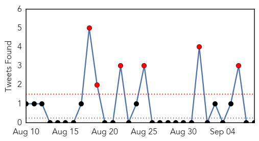
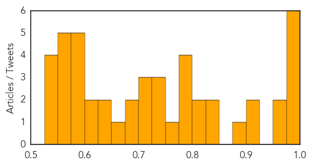

Unknown
30-Day Web Trend
0 alerts, 0 warnings
30-Day Twitter Trend
6 alerts, 0 warnings

Article Locations

Article Confidences
Top Articles:
- 0.996
- MERS is an increasing concern says WHO
- 0.994
- Legionnaire's Disease Spreading Out Of Control In The US
- 0.993
- All but one MERS-related patients move out of intensive care
- 0.987
- State's probable cases of Lyme disease quadruple
- 0.981
- West African Country Sees Its First Polio Case in Years After the Virus Mutated From an Oral Vaccine
- 0.980
- PHE investigates outbreak of E.coli
- 0.965
- Deadly Legionnaires’ disease outbreak in California, Illinois & the New York City
- 0.957
- Doctors urge residents to get ahead of the flu and get vaccinate
- 0.919
- Salmonella Deadly Outbreak In California
- 0.901
- UA Campus-Wide Flu Shot Campaign to Kick Off this Week
- 0.900
- Texas woman is second death in nationwide salmonella outbreak believed linked to cucumbers
- 0.837
- Glowing in dark, GMO chickens shed the light on bird flu fight
- 0.837
- Hong Kong: Legionnaires’ disease cases highest since reporting in 1997
- 0.823
- 09.09.03 Emergency action plan to control HIV, AIDS in NE
- 0.806
- Glowing in the dark, GMO chickens shed light on bird flu fight
- 0.794
- Glowing in the dark, GMO chickens shed light on bird flu fight
- 0.791
- Salmonella outbreak kills one, sickens hundreds in the U.S. - KBZK.com
- 0.790
- Sudan: West Darfur hospital faces staff shortage and more malaria cases
- 0.788
- AAP Issues New Guidelines For Flu Shots « CBS Minnesota
- 0.764
- Shingles vaccine not cost effective before age 60
- 0.742
- Arizona Stores That Sold Cucumbers Linked to Salmonella Outbreak
- 0.741
- Clinical trial for first oral drug candidate specifically developed for sleeping sickness
- 0.729
- The Caledonian-Record
- 0.717
- Guest column: The science on fluoride
- 0.708
- Prolonged strike takes its toll on Tarai
- 0.705
- Ukraine: sufficient vaccine coming to block polio outbreak
- 0.688
- 4 Southern Nevada salmonella cases linked to imported cucumbers
- 0.688
- Democratic People’s Republic of Korea: Floods DREF operation n° MDRKP007 Update n° 1 - Democratic People's Republic of Korea
- 0.656
- More Patients Now Go Abroad for Treatment
- 0.641
- Global health community slithers away from snakebite crisis as antivenom runs out - World
- 0.633
- Key thoughts & prevention strategies
- 0.620
- Zimbabwe bans some cattle movement over foot and mouth
- 0.614
- ACA linked with improvement in chronic disease management
- 0.590
- Expanded insurance coverage under ACA linked with major improvement in chronic disease diagnosis, treatment
- 0.589
- Zimbabwe bans some cattle movement over foot and mouth
- 0.587
- Dead squirrel found in Lake Tahoe had plague
- 0.585
- HIV Patients in Cambodia’s Roka Commune Too Weak to Work
- 0.579
- Elective surgery waits are higher in NSW for cataracts, hips and knees
- 0.575
- GMOs At Forefront Of Fight Against Bird Flu With Glow In The Dark Chickens
- 0.565
- Drugmaker Profits Undermine Malaria Diagnosis in Nigeria
- 0.560
- Cattle movement ban over foot and mouth
- 0.556
- Work Stopped at AvalonBay Site While Materials Tested for PCBs
- 0.550
- Mobile technology detects, prevents disease outbreaks in Sri Lanka
- 0.550
- Ukraine: Ukraine Humanitarian Situation Report #37, 18 July - 1 September 2015
- 0.549
- Elective surgery waits are higher in NSW for cataracts, hips and knees
- 0.537
- UPDATE: 13 people infected with E. coli traced to food vendor that frequented farmers markets
- 0.536
- Safeway Cucumbers Recalled for Salmonella in Canada
Top Tweets:
- 0.732
- Repito: todas las recetas médicas en PR deben incluir «dieta y ejercicio»; mira que esas dos previenen un montón de condiciones de salud.
- 0.623
- WHO update on 22 recent MERS cases in KSA: 15 linked to Riyadh hospital outbreak; 3 had camel exposure http://t.co/VJRDTcAizd
Hemmorhagic Fever
30-Day Web Trend
0 alerts, 0 warnings
30-Day Twitter Trend
0 alerts, 0 warnings

Article Locations

Article Confidences

Top Articles:
-
No articles found for Sep 08, 2015
Top Tweets:
-
No tweets found for Sep 08, 2015